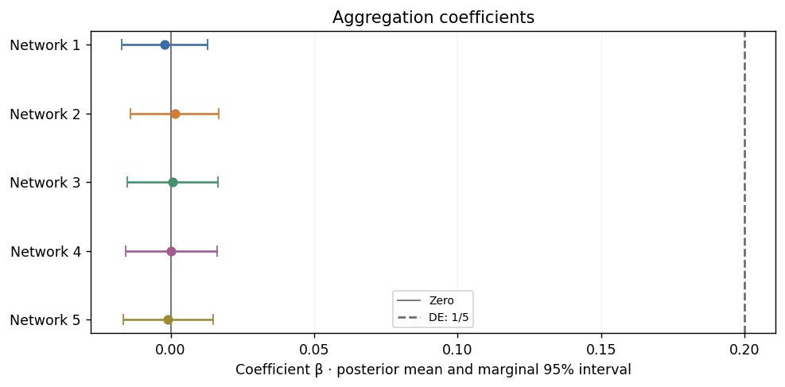
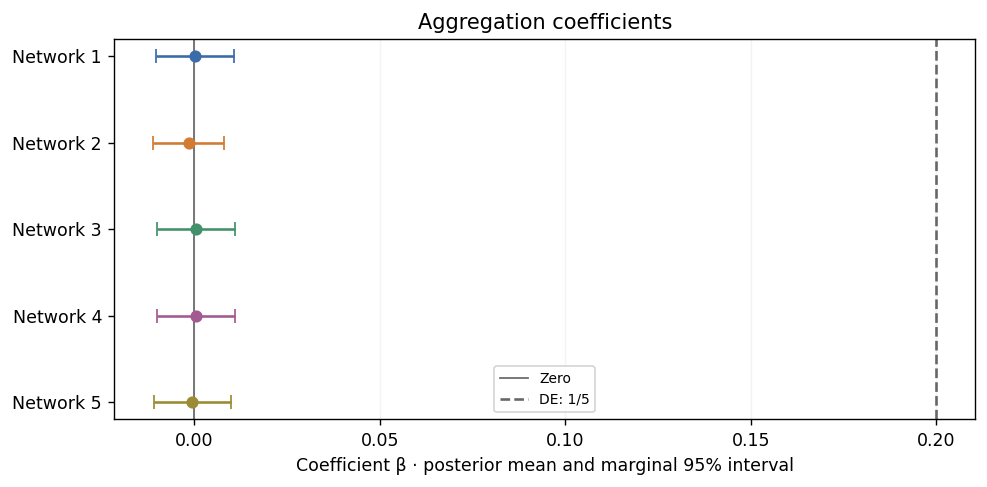
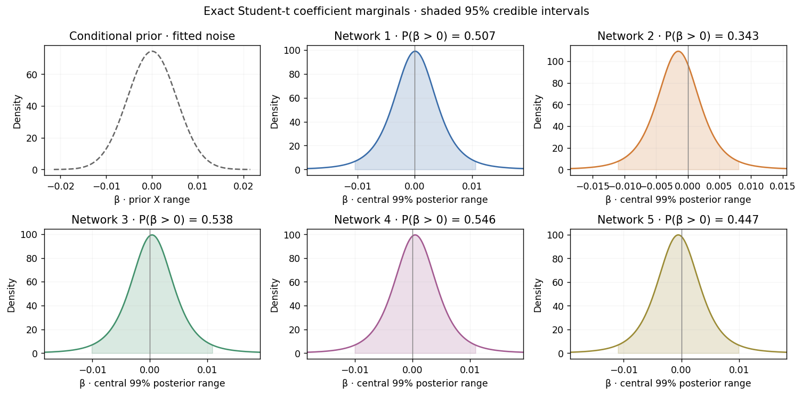
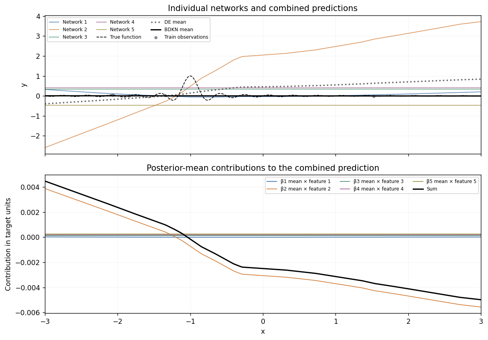
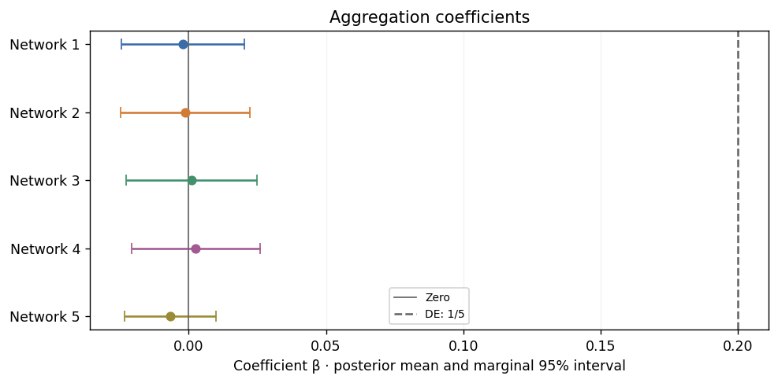
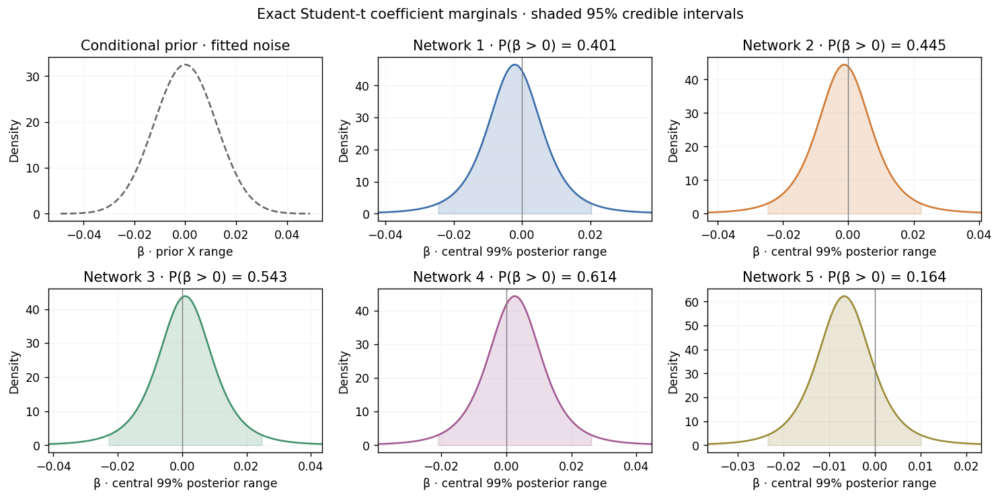
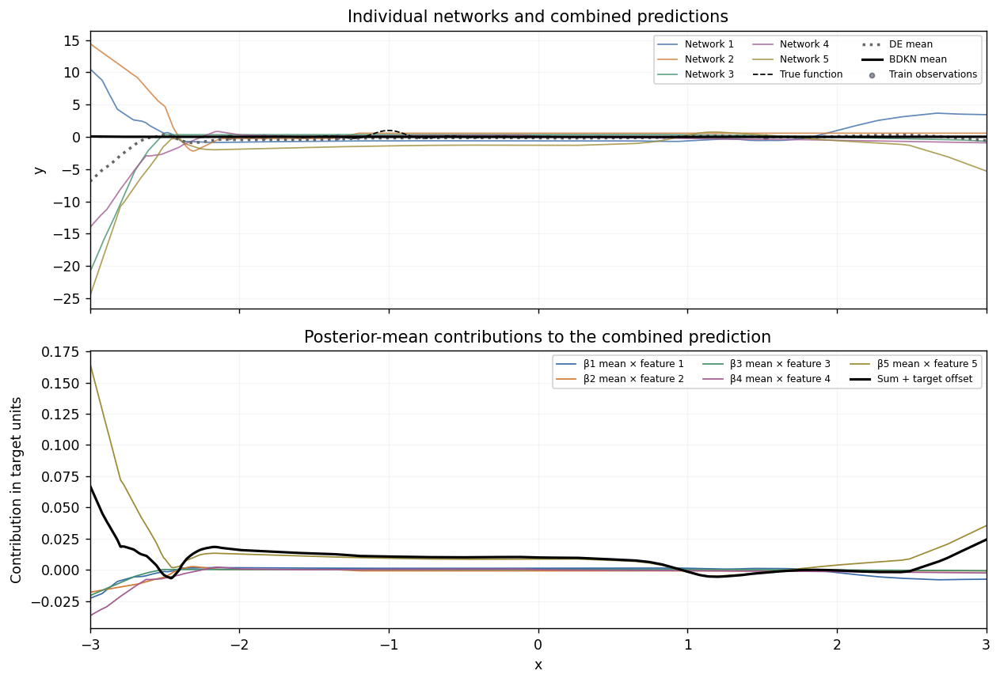
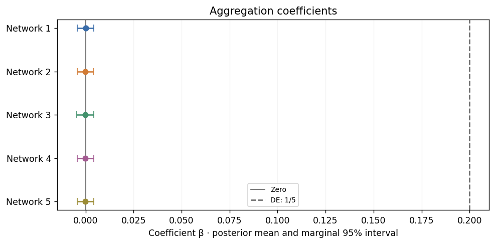
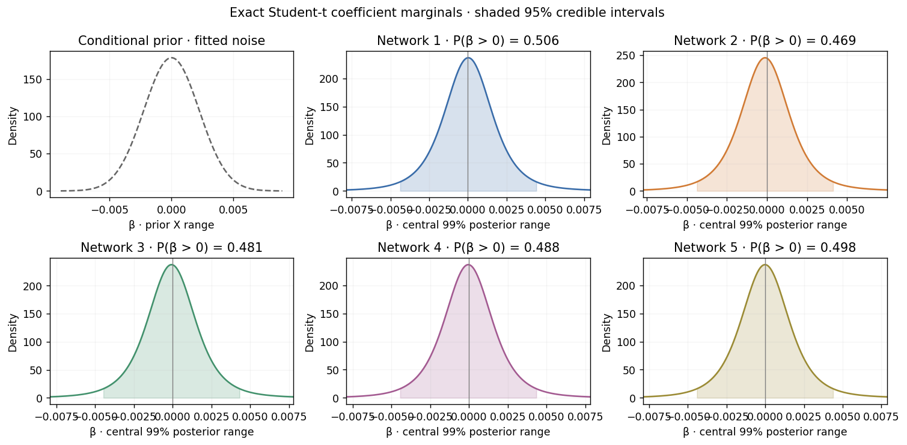
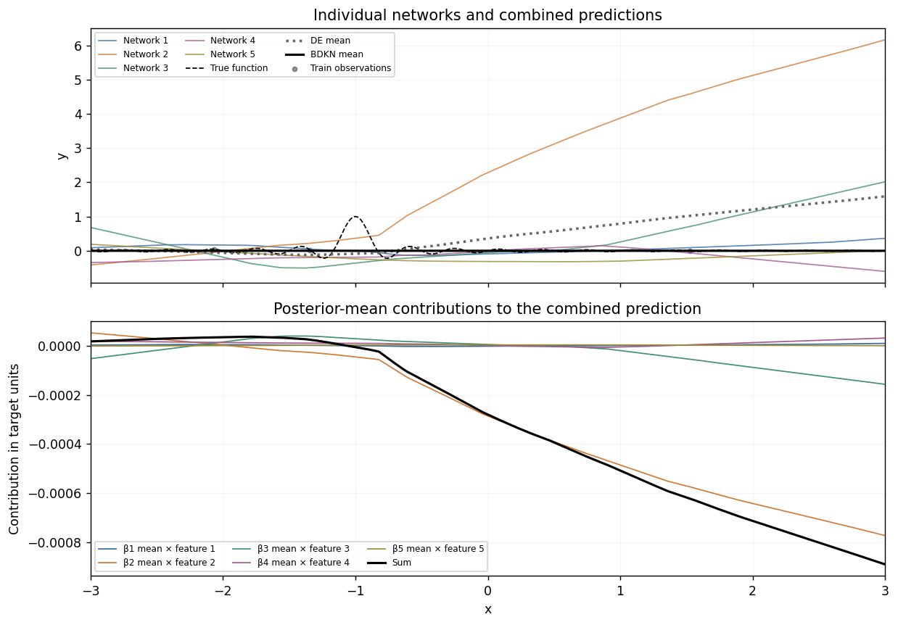

Regression comparison
Download resultsAggregation weights
Coefficients can be negative and need not sum to one. Intervals describe coefficient uncertainty; the dashed reference is DE’s fixed 1/H weight.
BDKN



Each density panel uses its own X range for readability; coefficient intervals above share a common axis. Prior reference conditions on fitted noise. Contribution shares use held-out inputs; test targets are used only for scoring.
| Network | β mean | 95% low | 95% high | P(β > 0) | Contribution share | Test RMSE | Test NLL |
|---|---|---|---|---|---|---|---|
| 1 | -0.00199 | -0.01695 | 0.01296 | 0.36495 | 0.53337 | 0.92803 | 1.37538 |
| 2 | 0.00137 | -0.01410 | 0.01683 | 0.59079 | 0.24810 | 0.59254 | 1.03148 |
| 3 | 0.00071 | -0.01508 | 0.01649 | 0.54640 | 0.07261 | 0.35267 | 0.93248 |
| 4 | 0.00016 | -0.01575 | 0.01607 | 0.51074 | 0.00540 | 0.19234 | 2.85656 |
| 5 | -0.00098 | -0.01664 | 0.01467 | 0.43513 | 0.14052 | 0.52972 | 1.05735 |
Functional repulsion · BDKN



Each density panel uses its own X range for readability; coefficient intervals above share a common axis. Prior reference conditions on fitted noise. Contribution shares use held-out inputs; test targets are used only for scoring.
| Network | β mean | 95% low | 95% high | P(β > 0) | Contribution share | Test RMSE | Test NLL |
|---|---|---|---|---|---|---|---|
| 1 | 0.00007 | -0.01045 | 0.01060 | 0.50739 | 0.00169 | 0.21603 | 10.35649 |
| 2 | -0.00149 | -0.01102 | 0.00803 | 0.34283 | 0.84544 | 2.32615 | 2.23082 |
| 3 | 0.00038 | -0.01009 | 0.01086 | 0.53810 | 0.03492 | 0.35269 | 0.93249 |
| 4 | 0.00046 | -0.01000 | 0.01092 | 0.54581 | 0.05039 | 0.41338 | 0.97957 |
| 5 | -0.00053 | -0.01097 | 0.00990 | 0.44690 | 0.06756 | 0.52968 | 1.05732 |
Weight repulsion · BDKN



Each density panel uses its own X range for readability; coefficient intervals above share a common axis. Prior reference conditions on fitted noise. Contribution shares use held-out inputs; test targets are used only for scoring.
| Network | β mean | 95% low | 95% high | P(β > 0) | Contribution share | Test RMSE | Test NLL |
|---|---|---|---|---|---|---|---|
| 1 | -0.00216 | -0.02452 | 0.02021 | 0.40114 | 0.13321 | 2.01479 | 6.40576 |
| 2 | -0.00124 | -0.02467 | 0.02220 | 0.44535 | 0.07683 | 2.94632 | 1.52910 |
| 3 | 0.00098 | -0.02279 | 0.02475 | 0.54294 | 0.04374 | 2.97396 | 7878.01744 |
| 4 | 0.00262 | -0.02089 | 0.02612 | 0.61365 | 0.10970 | 2.27535 | 187171.92015 |
| 5 | -0.00671 | -0.02344 | 0.01001 | 0.16382 | 0.63653 | 3.77158 | 2.20493 |
First-order repulsion · BDKN



Each density panel uses its own X range for readability; coefficient intervals above share a common axis. Prior reference conditions on fitted noise. Contribution shares use held-out inputs; test targets are used only for scoring.
| Network | β mean | 95% low | 95% high | P(β > 0) | Contribution share | Test RMSE | Test NLL |
|---|---|---|---|---|---|---|---|
| 1 | 0.00003 | -0.00437 | 0.00442 | 0.50598 | 0.00785 | 0.22801 | 0.40806 |
| 2 | -0.00013 | -0.00437 | 0.00412 | 0.46929 | 0.84594 | 3.37115 | 2.23432 |
| 3 | -0.00008 | -0.00446 | 0.00431 | 0.48149 | 0.11446 | 0.81223 | 1.81022 |
| 4 | -0.00005 | -0.00444 | 0.00434 | 0.48786 | 0.02723 | 0.31913 | 9.65951 |
| 5 | -0.00001 | -0.00440 | 0.00438 | 0.49779 | 0.00451 | 0.30071 | 2.38578 |